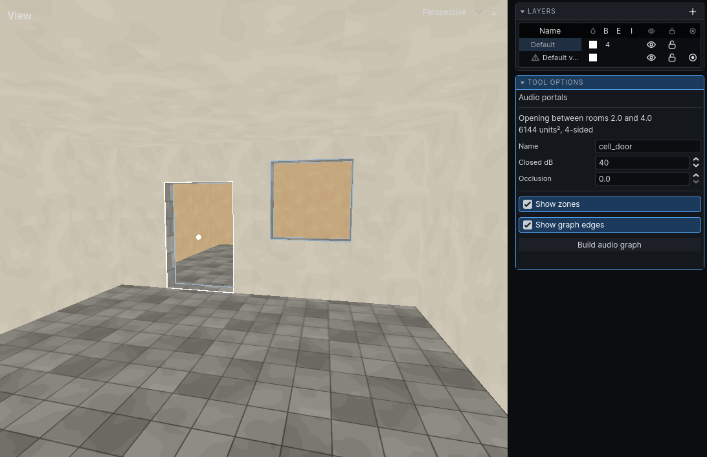

Doors and openings
Every opening between two abutting rooms is an acoustic portal: a doorway, a window, a hole in a floor. Sound moves from room to room only through them. Two windows in one wall are two portals. See Rooms and portals for what makes an opening.
Rooms that overlap have no opening between them. They are one zone, and there is nothing to name.
How sound travels
- A sound in your room plays where it is.
- A sound you can see plays where it is, even in another room.
- Otherwise it plays from each opening of your room that you can see, up to four of them, each at its own level. It reaches each one by the way that loses least: round through an open doorway rather than through a shut door, when that is quieter.
- A sound with no route at all is almost silent.
Each opening on the way, each corner turned and the distance travelled make the sound quieter and duller. A voice through a shut door sounds muffled and comes from the door's direction. A room with a shut door and an open archway hears a guard's shout through both: clear through the archway, dull through the door.
Naming an opening
A door has to find the opening it fills. It does so by name. The name is stored on the wall the opening is cut from, so it survives edits and moves with the room.
- Click Audio Portals on the toolbar, or choose it from the Tools menu.
- Click an opening in the 3D view. It turns white.
- In the panel, type a Name.
- Press
Escapeto deselect it. PressEscapeagain to leave the tool.
Named openings are drawn in yellow with a marker at their centre. Unnamed ones are drawn in dim blue.
The same name is used by navigation: one name closes an opening to both sound and routes.
Warning: Only openings cut from a wall you drew can be named. An opening whose wall came from a clip of another brush has no face to hold the name, and the tool refuses it with a warning.

Opening properties
| Property | What it does | Default |
|---|---|---|
| Name | How a door or script addresses this opening. Leave empty otherwise. | empty |
| Closed dB | How much quieter sound through it is when fully closed, 0 to 80. | 40 |
| Occlusion | Standing closure, 0 open to 1 closed: a grating, a boarded window. | 0 |
Leave Occlusion at 0 on an opening a door fills. The door drives it while the game runs.
Edits in the panel can be undone.
Closed doors
Your game's door entity names the opening it stands in. As it swings shut it closes that opening, from 0 to 1, and sound through it drops by up to its Closed dB and turns dull. How a door is set up to name its opening is your game's.
A shut door does not seal a room. Sound through it still arrives, quiet and dull. A fully shut door at the default 40 dB takes about two octaves off it; a light door of 10 dB or less makes it quieter and barely duller.
Note: A closed door does not stop guards walking through the opening. See Links.
Several openings between two rooms
A hall and a corridor joined by two doorways have two portals. The tool numbers them: the panel shows "Opening #2 between these two rooms". Name each one separately.